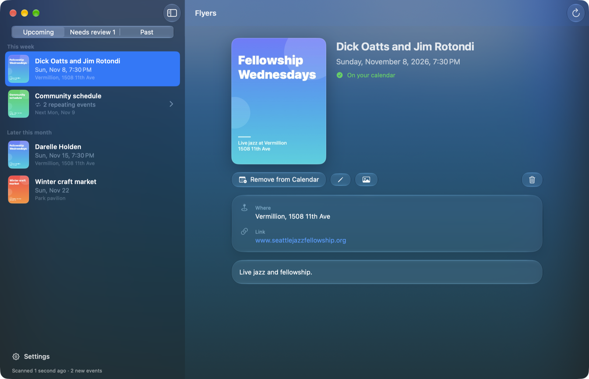
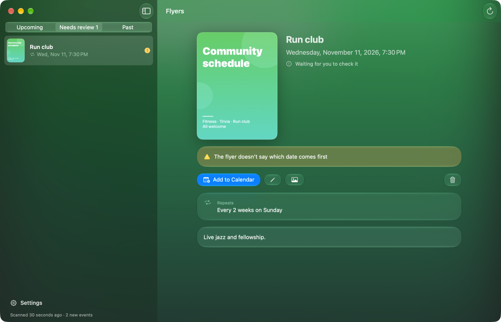
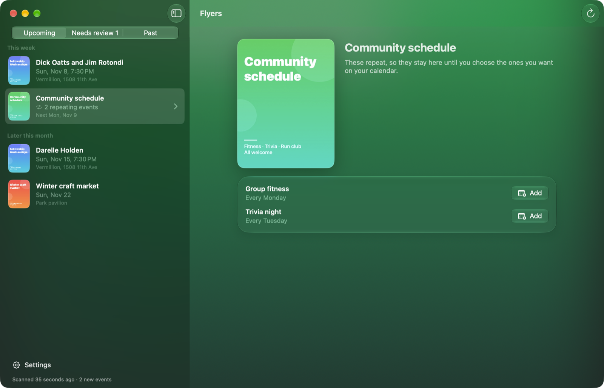
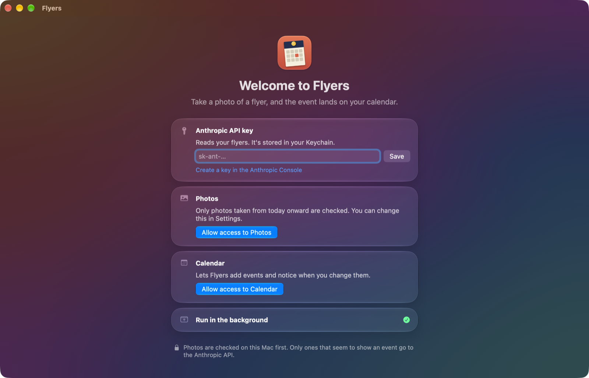

Flyers watches for new photos of posters and flyers, reads the dates, times and places, and adds the events to your calendar. You just take the picture.

Flyers keeps checking your photo library in the background, so there's nothing to open or upload.
See a flyer on a lamppost or a café wall? Photograph it on your iPhone, like you already do.
Your Mac checks new photos for event text first. Only the ones that look like flyers are sent to the Anthropic API to be read.
The event lands in the calendar you chose, with the place, a link back to its flyer and an alert before it starts.
A calendar full of wrong dates is worse than an empty one, so Flyers asks when it isn't sure.
Missing dates, a weekday that doesn't match its date, or a flyer the model isn't sure about all wait for a quick check first.
A gym timetable or a community board becomes a list of repeating events. Add only the ones you want.
Rename, move or delete an event in Calendar and Flyers notices. Every event links back to its flyer with Open in Flyers.
Photos are checked on your Mac with Apple's Vision framework. Screenshots are left out unless you turn them on.
Flyers uses your own Anthropic API key and pauses scanning when it reaches the monthly limit you set.
Fix anything a flyer got wrong with ⌘E, delete with ⌫, and undo a delete you didn't mean.
Real windows, with made-up flyers.

When a flyer is unclear, Flyers says what's missing and waits for you to add the event.

Repeating events from one flyer stay together, so you can pick the ones worth a spot on your calendar.

Add an API key, allow Photos and Calendar, and choose where events go. Flyers only checks photos taken from then on.
There's no download yet, so build it from source.
git clone https://github.com/kylepollina/flyer-calendar.git cd flyer-calendar ./scripts/build-app.sh cp -R build/Flyers.app /Applications/
Requires macOS 15 or later, Xcode or the Swift toolchain, and an Anthropic API key. Builds are signed ad hoc, so macOS may ask for Photos and Calendar access again after you rebuild.